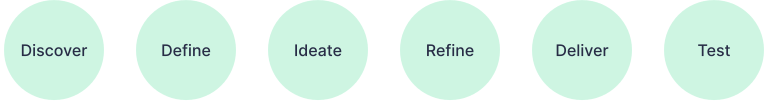

Awake
Mobile Application
- Product Strategy
- HTML, CSS
- Visual Design
- Interaction Design
- Personas
- User research
The Opportunity
About 10 years ago, I was in search of a good app with spiritual teachings. By talking to a friend who is also a developer, we realized that there was a gap to cover: a mobile app that offered good spiritual content, good design, and a freemium model. Seeing this opportunity, we were set to make good use of technology to transform the spiritual practice of people, and the Awake app was born.
As the designer, I was responsible for the whole UI/UX design process, including branding and social media. To get it done, I've collaborated with the developer and talked to a lot of people to get feedback on all steps of the project.
The Design Process
Discovery: User Research
The concept of the app was initially around teachings from Buddhism. We surveyed 20 Buddhist practitioners in Brazil, to understand their needs and behaviors regarding their practice, and their usage of technology. We found that the majority used digital media to consume content, but not many used apps because of their low quality; and that the majority shared content, which could help spread the app.
Competitive Analysis
We analyzed several apps and websites in the space of meditation and spiritual teachings, observing their feature offerings and business models. At that time, the most successful were meditation apps, offering an initial free plan, with paid plans for exclusive content, such as guided meditations.
Definition: Personas
Based on the data gathered in the user research, in combination with our understanding of the target audience, I created two primary personas and a secondary persona.
Product Backlog
Our discovery revealed several features that could be beneficial for our target audience, such as teachings in video, audio, and text, content in topics, social features, courses, and guided meditations. Having a minimal team, we aimed to bring value whilst being simple, deciding on the following features for the MVP: the inspiration of the day, a glossary of Buddhist terms, and the possibility of sharing the quote, to help spread the app. The product backlog evolved, being curated by myself and the developer.
Ideation: Wireframes
I used wireframes to prototype new features. To reach the wireframes phase, first I used persona based-scenarios, user flows, and sketches.
Naming and Logo
We wanted a name that was simple and impactful. After ideating, we decided to go with “Awake”, being the awakening process a benefit of the app. For the logo, I worked with the concept of a face showing contentment, and radiating light, which are also benefits of using the app.
Visual Design
To create the design language, I inspired myself in the aesthetics of Buddhism, with the usage of the burgundy color, light effects, and buddhist iconography.
First design update
As the app's scope was extended from Buddhist teachings to accommodate other spiritual lineages, I made updates on the visual design. I changed the main color to purple, which is the color of spirituality. As it was challenging to offer a good reading experience of text over image backgrounds for the quotes screen, I moved to a unicolor background. I also updated the quote font to have more ornaments. Those changes made the app more light, and elegant.
Iconography
I've illustrated the icons for the app, following a minimalistic approach, and using filled icons for active items.
More colors and vibrancy
With the addition of the possibility to swipe through quotes, I introduced new backgrounds to make the experience more interesting. I also fine-tuned the main color and added vibrancy to the gradients, to make it more vivid.
The Development
At the time we used a framework called Sencha Touch, which allowed the development of an HTML5 based mobile app running on iOS and Android. I was responsible for customizing the theme of the framework to achieve the visual design through CSS. I used the SaSS preprocessor and did pull requests to GitHub.
User Feedback
I kept attentive to the feedback we were getting as a way to prioritize issues and requested features. We implemented a contact form directly on the app, which allowed users to write to us. Besides that, we got feedback from our Facebook page, in the Apple and Google Play Store. I run usability tests for new features we planned to implement.
Takeaways
- It was an exciting project which allowed me to work on all phases of product design and beyond.
- Being one of the co-creators allowed me to get involved with product management, understanding the market, and making strategic decisions around features and releases.
- Even though we couldn't establish a sustainable business model, the app benefited thousands of people with its positive messages and it's still available on the Google Play Store. Later on, a spiritual organization requested us to make a similar app crafted to their community.
Interested in working together?
Drop me a line and I'll be happy to get back to you :)
Designed with ♥ in Figma. Coded with fun with Tailwind CSS.